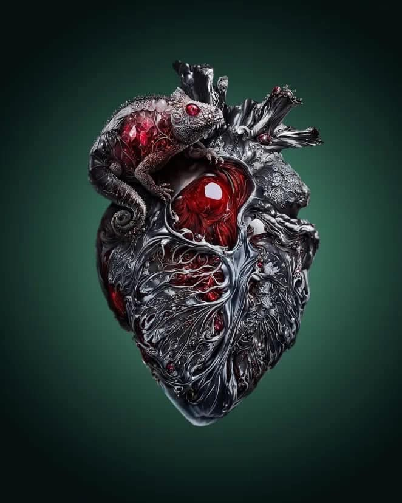

Can we train our hearts through our experiences?
Does heartbreak make us stronger and more resilient?
Can we learn from our love stories?
Should we try to erase painful experiences or make friends with them?
These are some of the questions that I have faced after some losses, when my heart wasn’t
ready to let go.
The mourning of a loved one and the unpredictable process of grief took me to unexplored, wild territories of my soul. When I walked in that magical field, the loved one I lost gave me promising words and hope that we would end up being together, live in harmony and, finally, die in each other’s arms.
Other times, he would scare me with his unpredictable messages. “Let’s meet in front of that building; I’ll tell you the address, all you have to do is draw a map.” So I drew maps. When I finished, I heard his voice: “I never loved you; it was all a game. That street doesn’t exist.” Long months later, I realized that I had created a love story in my mind.
I asked my family for help when his voices grew louder and so intense that I was unable to sleep and experienced panic attacks. Prior to that, for a while, I was unable to leave the house. My made-up lover followed me outside and sat next to me while I drove the car. He lived within me and threatened to break into the house. There seemed to be no escape, no cure for me.
Communities where people with lived experience of psychosis and schizophrenia meet gave me hope that I am actually not (so) crazy. Or, if I suffered from symptoms of psychosis, like delusions and different hallucinations, it was because my mind and heart tried to make sense of an experience I could not metabolize. I really wanted to make sense of everything—my past, present and future—within the frame of one romantic love story. Maybe I wasn’t given proper love when I was a child, and I am so hungry for it that love devours me, like a devouring mother.
I still love romance, but if I had to choose, without a second thought, I would have a loving and supportive community and opt for my love for art, literature and language learning.
My Heart is a Strange Creature
My heart’s got
a lion’s head.
Determination and
pride are its drives,
assisted by intuition;
the royal, intelligent face
doesn’t disguise
its wish to model and guide.
It has a neck of
a nightingale’s peak,
the ultimate voice of Nature:
“Hear my song,
I’m gracious and enchanting
night and day, offering you
aphrodisiac through dreams.”
My heart’s body is
the fire-belly of the toad,
“Bombina.- It’s how I’m called.
Come with me, but be careful,
my dry skin outside
is only where I hide.
It’s my costume;
- I am fiery inside-
What if I lack fantasy?
I am earthy-dirty, watery-slippery.
Do you mind?”
My heart carries gibbon-arms,
searching for your armor:
“I am your Baby,
give me your warmth,
protect me,
I yearn for your
fluffy-furry type!”
My heart has
- such a disgrace! -
legs of a crab.
Should they go forward
they step backwards
into memories of lost loves -
long forgotten and metabolized;
moving like the high tide,
they leave behind
the wisdom of this heart’s guide.